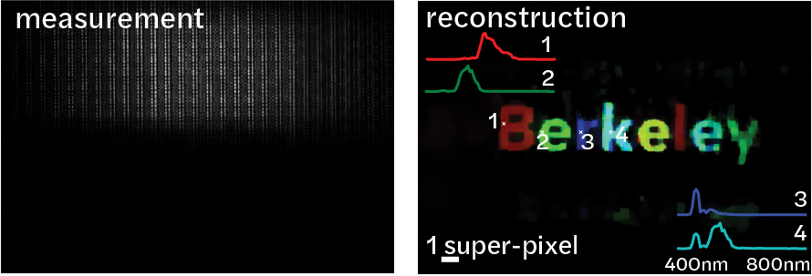
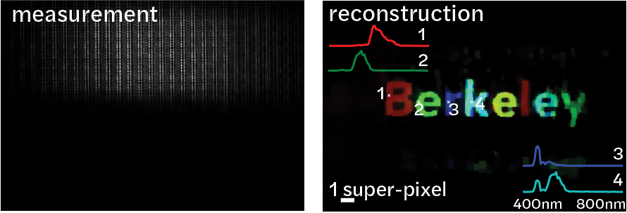
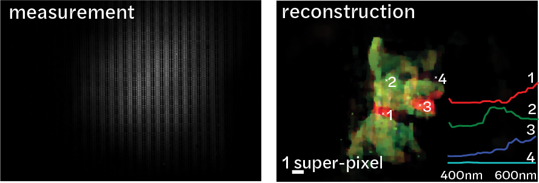
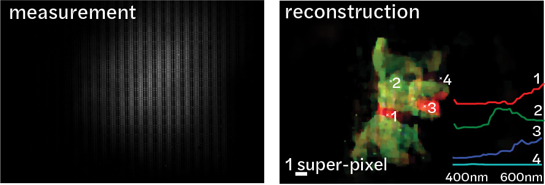
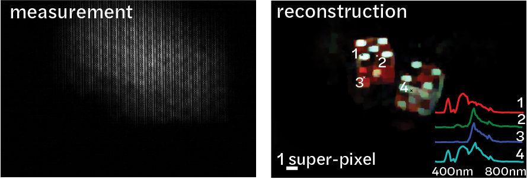
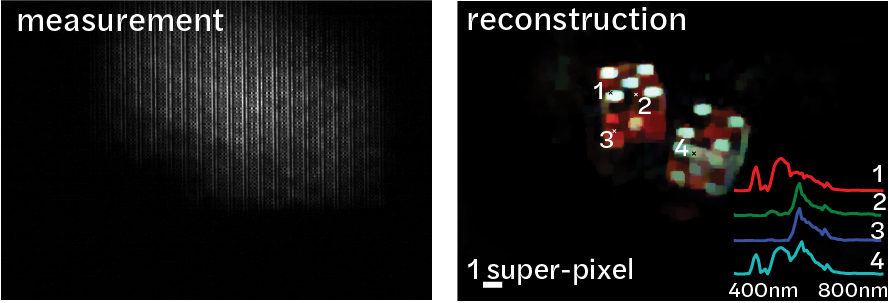
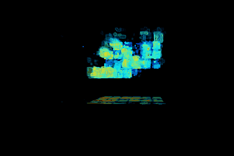
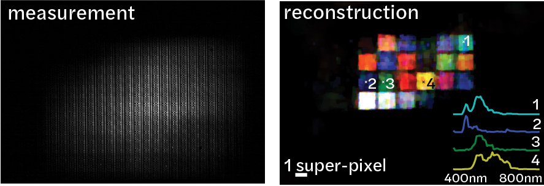

Gallery of Reconstructions
Below are some example reconstructions from our Spectral DiffuserCam prototype. All of the images were captured with no lenses and in a single exposure. 3D hyperspectral data-cubes with 64 spectral channels are recovered from a 2D encoded measurement. 
 Colorful Berkeley letters displayed a computer monitor, showing the full recovered 3D hyperspectral datacube (top) and false-color image (bottom right) recovered from an encoded measurement (bottom left).
 
Thorlabs plush toy placed in front of the imager, showing the full recovered 3D hyperspectral datacube (top) and false-color image (bottom right) recovered from an encoded measurement (bottom left).
 
 Dice displayed on a computer monitor, showing the full recovered 3D hyperspectral datacube (top) and false-color image (bottom right) recovered from an encoded measurement (left).


Color chart reconsturction, showing the full recovered 3D hyperspectral datacube (top) and false-color image (bottom right) recovered from an encoded measurement (bottom left).
Color chart reconsturction, showing the full recovered 3D hyperspectral datacube (top) and false-color image (bottom right) recovered from an encoded measurement (bottom left).